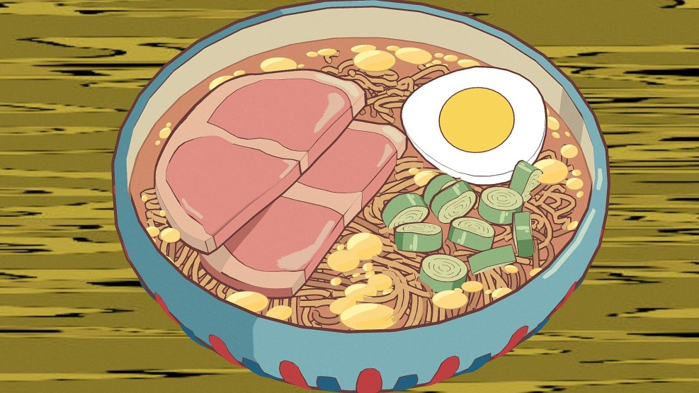

Ponyo's Ramen Bowl

What is ramen?
Ramen is a Japanese noodle dish. It consists of Chinese-style wheat noodles served in a broth; common
flavors are soy sauce and miso, with typical toppings including sliced pork, nori, menma (bamboo shoots),
and scallions. Ramen has its roots in Chinese noodle dishes. Nearly every region in Japan has its
own variation of ramen, such as the tonkotsu (pork bone broth) ramen of Kyushu and the miso ramen of Hokkaido.
Ingredients:
- 1 package Nissin Chicken Ramen
- 400ml boiling water
- 1 slice cooked ham (cut in half)
- 1/2 hard boiled egg
- chopped green onion
Steps for making this delicious snack:
- Boil the water
- Place the noodles in a ramen bowl. Pour boiling water over the noodles and cover. Set and start your timer for three minutes
- After the first minute, quickly open, shake the noodles to separate, then arrange the ham, egg, and green onion over the noodles. Cover again and wait until the timer beeps.
NOTE: If you don't have a noodle bowl with a lid, you can cover the bowl with a plate!
Return To Top
Homepage